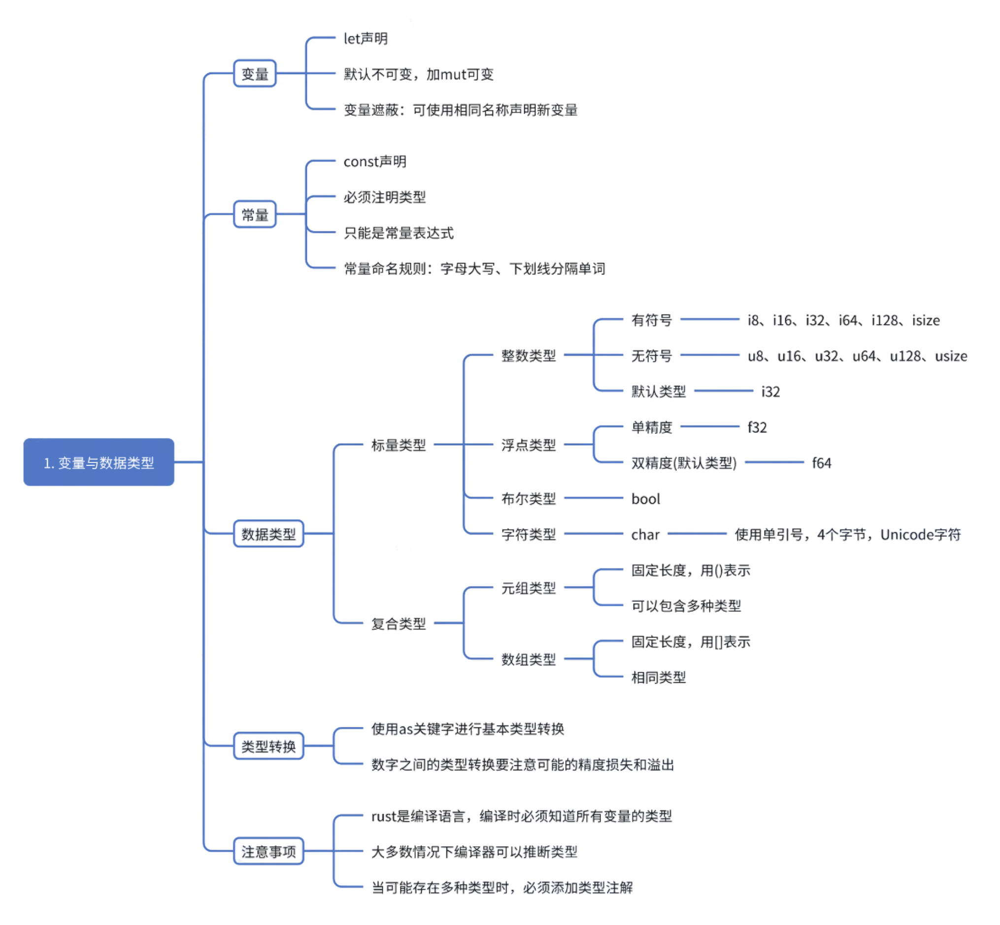

rust学习笔记1-变量与数据类型

变量
- 使用
let关键字声明变量
1 | fn main() { |
- 变量默认不可变（immutable），需要修改时必须使用
mut关键字 - 变量遮蔽（Shadow）：可以使用相同名称声明新变量，即第一个变量被第二个变量遮蔽（Shadow）
1 | fn main() { |
常量
- 使用
const关键字声明 - 必须注明类型
- 只能是常量表达式，不能是函数调用的结果或者运行时计算得到的值
- 常量命名规则：字母全部大写，使用下划线分隔单词
1 | const MAX_POINTS: u32 = 100000; |
数据类型
标量类型
标量（scalar）表示单个值，有以下几种：
- 整数类型
- 没有小数部分的数字
- 有符号：
i8,i16,i32,i64,i128,isize - 无符号：
u8,u16,u32,u64,u128,usize - 默认类型：
i32
- 浮点数类型
- 带小数点的数字
f32：单精度f64：双精度（默认类型）
1 | let x = 2.0; // f64 |
- 布尔类型
bool：true 或 false
1 | let t = true; |
- 字符类型
char：使用单引号，4个字节，表示 Unicode 字符
1 | let c = 'z'; |
复合类型
复合类型（compound type）可以将多个值组合成一个类型，有以下几种：
- 元组类型
- 固定长度，用
()表示 - 可以包含不同类型的值
1 | let tup: (i32, f64, u8) = (500, 6.4, 1); |
- 数组类型
- 固定长度，用
[]表示 - 元素类型必须相同
1 | let arr = [1, 2, 3, 4, 5]; |
类型转换
- 使用
as关键字进行基本类型转换
1 | fn main() { |
- 数字之间的类型转换要注意可能的精度损失和溢出
1 | fn main() { |
注意事项
- Rust 是静态类型语言，编译时必须知道所有变量的类型
- 大多数情况下编译器可以推断类型
- 当可能存在多种类型时，必须添加类型注解
1 | let guess: u32 = "42".parse().expect("不是数字！"); |

 微信
微信 支付宝
支付宝
相关推荐

2025-06-25
git rebase 与 merge区别
一图概览 特性 git merge git rebase 操作本质 创建一个新的合并提交 把你的提交“挪到”目标分支之后 提交历史 保留分支分叉（图像呈现树状） 线性历史（图像像一条直线） 是否修改提交历史 否 是（修改提交 ID） 是否需要强推 通常不需要 是（如果之前 push 过，rebase 后需 -f） 冲突处理方式 一次性解决合并冲突 每一个提交可能触发冲突，逐个解决 合并记录 有合并 commit（如 “Merge branch…”） 没有合并记录，提交像是直接在主干上产生的 示例对比 1. git merge 的效果 12git checkout maingit merge feature 图示： 原始： 123A---B---C (main) \ D---E (feature) merge 后： 123A---B---C--------M (main) \ / D------E 多了一个 M 合并提交。 2. git rebase 的效果 12git...

2025-02-10
rust学习笔记2-函数
函数定义 fn关键字声明函数 函数名使用下划线命名法（蛇形命名法，snake_case）：字母小写，下划线分隔单词 1fn <函数名>(<参数: 类型>) <函数体> 示例： 1234567fn add(x: i32, y: i32) -> i32 { x + y // 无分号，作为返回值}fn greet(name: &str) { println!("你好, {}!", name); // 无返回值，等同于返回 ()} 函数参数 必须声明每个参数的类型 参数数量是固定的 123fn print_sum(a: i32, b: i32) { println!("和是: {}", a + b);} 函数体的语句和表达式 语句：执行操作但不返回值，语句末尾有; 表达式：计算并返回值，表达式末尾没有; 12345678fn...

2025-02-11
rust学习笔记4-控制流
if 表达式 if 条件必须是bool值，否则会报错 1234567let number = 6;if number < 5 { println!("条件为真");} else { println!("条件为假");} else if 123456789let number = 6;if number % 4 == 0 { println!("数字能被4整除");} else if number % 3 == 0 { println!("数字能被3整除");} else { println!("数字不能被4或3整除");} 在 let 语句中使用if if else每个分支返回值类型必须一致 12let condition = true;let number = if condition { 5 } else...
评论